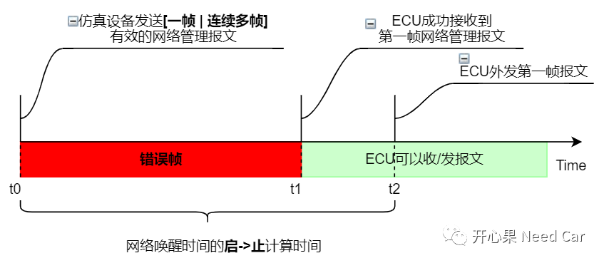
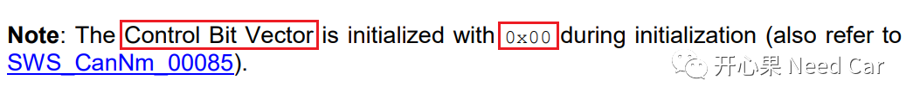
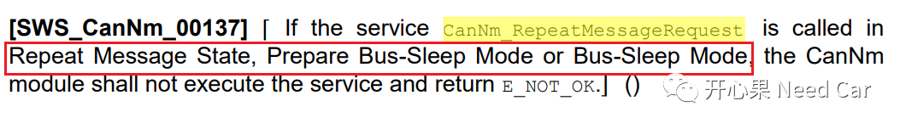

开心果 Need Car · 2022-06-18T15:00:00+08:00 · 微信原文
如标题，本文要讨论两个问题，这两个问题是群里小伙伴的问题。我把自己对这两个问题的理解做了一个整理，分享给大家。
Q1：ECU从休眠到网络唤醒时间怎么测？
答：对于CAN网络，ECU从休眠到网络唤醒时间的测试方法如下：
t0时刻，使用仿真设备（CANoe/PCan/ZLG等）发送一帧或者连续多帧有效的网络管理报文；
t0~t1期间，由于ECU休眠（主芯片断电，不考虑低功耗情况），Controller关闭，ECU不能接收仿真设备发送的报文，所以，此期间仿真设备发送的报文，ECU无法应答而出现错误帧（No Ack）；
t1时刻，ECU主芯片供电，程序运行，Controller恢复正常工作模式（Transceiver也处于正常工作模式），可以接收报文；
t2时刻，识别到有效唤醒源（有效网络管理报文），通信打开，ECU外发第一帧报文。如果节点的网络类型是Passive Mode，第一帧外发报文是应用报文；如果节点的网络类型非Passive Mode，第一帧外发报文是网络管理报文。
所以，ECU从休眠到唤醒的启->止时间 = t0 -> t2，测试时计算此时间差值（t2-t0）是否满足需求。注意，t0时刻是指第一帧错误帧时刻。
上述时序如下所示：

提示：仿真设备为什么发送多帧网络管理报文？如果Transceiver没有PN（Partial Network）功能，不能识别网络管理报文，第一帧网络管理报文只是激活SBC，完成主芯片的供电任务，而没有被ECU有效接收，则需要第二帧网络管理报文唤醒节点网络。
Q2：节点被动唤醒进入RMS状态，RMB需要置位吗？

如果在NOS（Normal Operation State）/RSS（Ready Sleep State ）主动请求进入RMS，即：主动调用CanNm_RepeatMessageRequest()接口，RMB（Repeat Message Bit）置位，即：RMB = 1。
CanNm_RepeatMessageRequest()接口不能在RMS、PBM、BSM状态下主动调用，如下所示：

这意味着，节点被动唤醒的时候，网络状态由BSM进入RMS，所以RMB = 0。
提示：上述基于CAN总线讨论。
往期精彩回顾